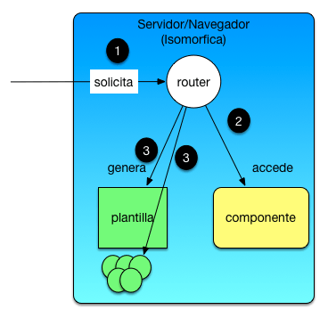

Arquitecturas SPA MVC

Pocoapocoelladoclientecomienzaatenermáspeso
enlosdesarrollosyseneces
itaorganizarmejorelcódigodeJavaScript.Aparec
enlosprimerosframeworks
MVCdeclientecomoBackbone.jsquepermitendividi
rlasresponsabilidadesde
lamismaformaqueenelservidor.
SPA MVC y uso de componentes

Estasarquitecturasempiezanamadurarrápidament
eyaparecentecnologíascomo
Angular.jsquepromueveelusodelmodeloMVCylauti
lizacióndecomponentesencap
adepresentación.Aparecenlibreríascomplement
ariascomoReactquesecentrane
nestosúltimos.
Arquitecturas Web Isomórficas

Ahoramismoestamosentrandoenotrafase,
comienzaallegarelJavaScriptIsomórfico.
Sinosfijamosenelúltimodiagramalapartec
lienteylaparteservidorsonmuyparecida
s.¿Quésucederíaenelcasodequeambaspartes
estuvieranimplementadasenJavaScript
Puesqueprobablementemuchocódigosepodríac
ompartirysegúnseejecutaralaaplicac
iónenclienteoenservidorelcomportamientovariaría.
 Arquitecturas Web
Arquitecturas Web